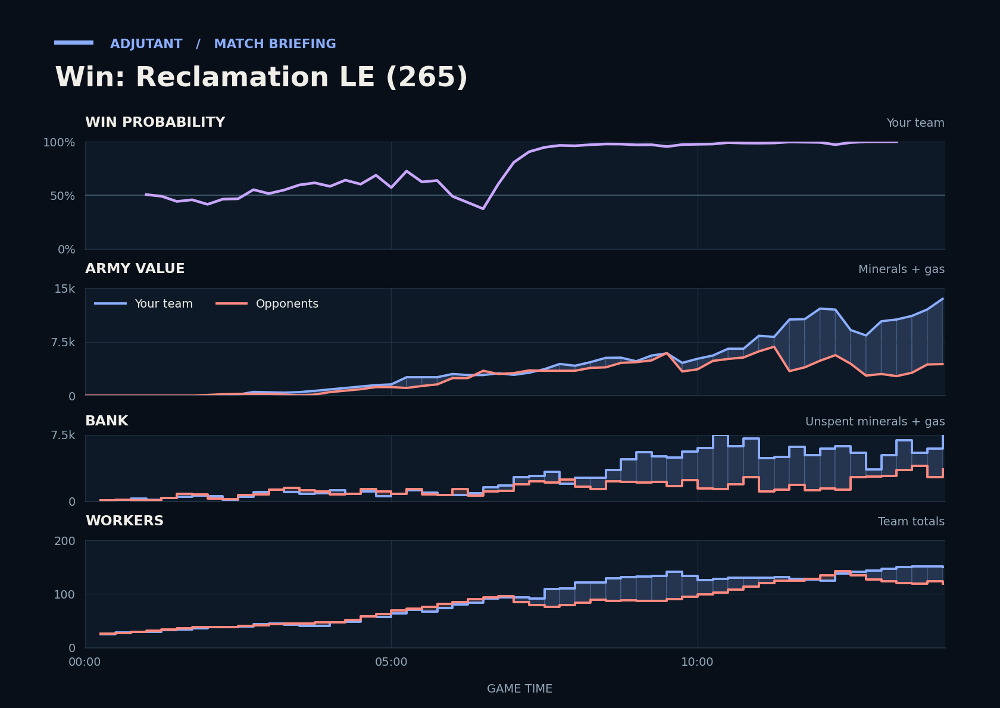

Win: Reclamation LE (265)
Provisional debrief. The full report (timeline, insights and analysis) is being generated.

Cached narration uses different analysis inputs (facts, engine notes, prompts or model settings). It has not been regenerated for this report.
**Win.** You won because your army led from 10:30 on, so the last fight at Critter's third was nearly one-sided.
**Why**
- 2:27–3:48: Scallop's SCVs died to enemy SCVs and Reapers, leaving Scallop with the fewest workers of the four at 4:00.
- 6:11-7:35: Scallop's Banshees killed 28 enemy workers, which took Critter's worker count down to a low.
- 13:47–14:02: TakeTheTip's Ultralisks and Zerglings killed 24 SCVs at Critter's third while the duo lost almost nothing; Critter typed gg.
Current engine analysis: Win. Review 6:11–7:35: you killed 28 enemy workers (14 of CritterKill's). The biggest fight came at 12:10–13:27 (7,625 lost, 10,150 killed).